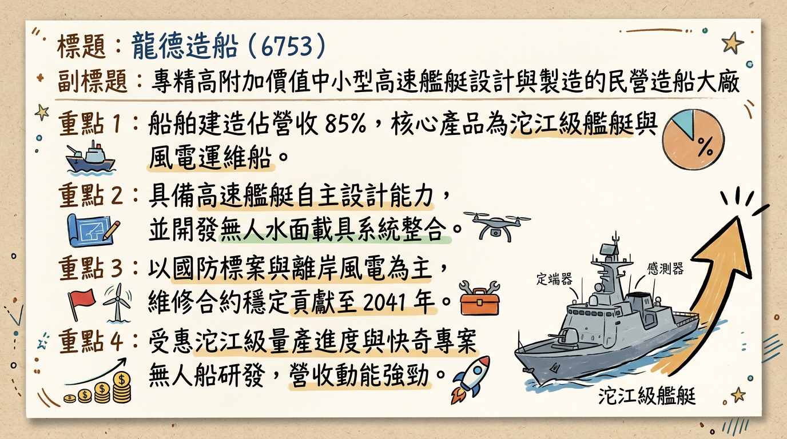

6753 龍德造船 深度研究報告
一句話摘要
從「中小型高速艦艇」邁向「大噸位與無人載具系統整合商」，隨 2026 年新廠產能開出，獲利將進入爆發成長期。公司概覽
龍德造船（6753）為台灣民營造船龍頭，以中小型高速艦艇的研發、設計與建造為核心，是「國艦國造」計畫中沱江級巡邏艦的主要建造商。
業務產品線與營收結構（2025-2026 預估）
| 業務類別 | 產品/服務內容 | 營收佔比 | 備註 |
|---|---|---|---|
| 船舶建造 | 沱江級艦、海巡艦、巡防艦、CTV 風電運維船 | 80% - 85% | 採完工比例法（POC）認列營收 |
| 船舶維修 | 國防部與海巡署長期保修合約 | 10% | 具 2041 年前長約，每年約 3-5 億元 |
| 其他與備品 | 無人艇（USV）研發、零件供應、技術服務 | 5% - 8% | 毛利較高，未來成長潛力大 |
核心競爭優勢
財務分析
近期月營收趨勢
| 月份 | 營收（新台幣百萬元） | 月增率 MoM | 年增率 YoY | 簡評 |
|---|---|---|---|---|
| 2026/01 | 567 | - | +16.62% | 新年度標案進度認列順利 |
| 2025 全年 | 5,246 | - | +2.49% | 受罰金與缺料影響，成長略緩 |
| 2024 全年 | 5,118 | - | +1.40% | 穩健交付階段 |
季度獲利能力趨勢
| 指標 | 2025 Q3 | 2025 Q2 | 2025 Q1 | 2024 Q4 |
|---|---|---|---|---|
| 毛利率 (GPM) | 20.66% | 19.47% | 19.06% | 22.75% |
| 營業利益率 (OPM) | 17.26% | 16.26% | 16.00% | 19.64% |
| 稅後淨利率 (NPM) | 16.99% | 4.90% | 13.56% | 13.80% |
法說會重點
- 在手訂單能見度：截至 2025 年底，在手訂單約 144 億元，待執行金額為 67 億元，訂單能見度至 2027 年。
- 海巡署新計畫：行政院核定 568 億元「海域維權計畫」（40 艘艦艇），龍德為主要競爭者。
- 無人載具進度：
* 水下無人載具預計於 2026 年完成海測。
券商觀點
| 券商名 | 目標價 | 評等 | 日期 | 核心邏輯 |
|---|---|---|---|---|
| 本土大型研究部 | 165 | 買進 | 2026/02/10 | 2026 新廠投產，EPS 預估達 7.98 元 |
| 美系法人部 | 148 | 持有 | 2026/01/15 | 關注新廠折舊壓力對毛利的短期影響 |
| 投顧機構 A | 158 | 買進 | 2025/12/28 | 看好無人艇外銷潛力與海巡署 568 億標案 |
財報深度分析
股權異動與資本結構
- 大股東穩定度：勤益控股（17.6%）與國發基金（6.9%）持股穩固，近一年無申報轉讓。
- 可轉債（67531）：
* 轉換價：117.9 元。
* 目前仍有約 8 億元未轉換，潛在稀釋風險約 5-7%，對股價具備一定心理壓力。
產業分析：競爭格局
| 公司名稱 | 核心強項 | 主要產品噸位 | 市場定位 |
|---|---|---|---|
| 龍德造船 (6753) | 高速、鋁合金、系統整合 | 100 - 5,000 噸 | 高端利基、軍用高速艦 |
| 中信造船 (2644) | 大型海巡艦、漁船維修 | 1,000 - 5,000 噸 | 公務艦艇、民用船 |
| 台船 (2208) | 重型軍艦、潛艦、商船 | 10,000 噸以上 | 國造潛艦、大型運輸艦 |
近期催化劑
- 利多事件：
2. 無人水下載具（UUV）海測成功。
3. 海巡署 568 億元新計畫標案開標。
- 利空事件：
2. 缺工導致工期延後與罰金認列。
⭐ 成長動能時間軸
- 2025 Q4：沱江級後續艦（反艦型）穩定交船，營收回溫。
- 2026 Q1：蘇澳六廠北棟正式投產。船舶建造能力從 1,000 噸提升至 4,000 噸。
- 2026 Q2：預計進行水下無人載具（UUV）海測。
- 2026 Q3：爭取「海域維權計畫」首批訂單簽約。
- 2027 年：新廠房全產能運作，年營收貢獻預計增加 15-20 億元。
2026 展望
- 成長動能：
2. 無人載具業務從研發進入小量產，拉高整體毛利。
- 風險因素：
2. 2024 年發行之可轉債轉換後的股本稀釋效應。
投資結論
本報告由 AI 自動產生，資料來源為公開網路資訊，僅供參考，不構成投資建議。產生時間：2026-03-01 02:29
📊 資訊卡
